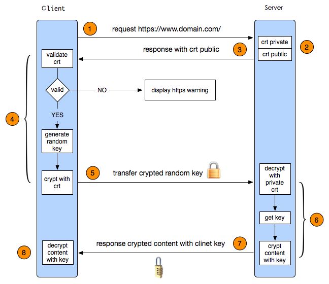

https
HTTPS其实是有两部分组成：HTTP + SSL/TLS，也就是在HTTP上又加了一层处理加密信息的模块。
服务端和客户端的信息传输都会通过TLS进行加密，所以传输的数据都是加密后的数据。
SSL协议实现的安全机制包括：
数据传输的机密性：利用对称密钥算法对传输的数据进行加密。
身份验证机制：基于证书利用数字签名方法对服务器和客户端进行身份验证，其中客户端的身份验证是可选的。
消息完整性验证：消息传输过程中使用MAC算法来检验消息的完整性
SSL通过握手过程在客户端和服务器之间协商会话参数，并建立会话。
会话包含的主要参数有会话ID、对方的证书、加密套件（密钥交换算法、数据加密算法和MAC算法等）以及主密钥（master secret）。通过SSL会话传输的数据，都将采用该会话的主密钥和加密套件进行加密、计算MAC等处理。
不同情况下，SSL握手过程存在差异。下面将分别描述以下三种情况下的握手过程：
只验证服务器的SSL握手过程
验证服务器和客户端的SSL握手过程
恢复原有会话的SSL握手过程
加解密过程

实现过程如下：
1.1.客户端发起HTTPS请求：
客户端访问某个web端的https地址，一般都是443端口
1.2.服务端的配置：
采用https协议的服务器必须要有一套证书，可以通过一些组织申请，也可以自己制作，目前国内很多网站都自己做的，当你访问一个网站的时候提示证书不可信任就表示证书是自己做的，证书就是一个公钥和私钥匙，就像一把锁和钥匙，
1.3.传送证书：
传递的证书其实就是公钥，里面包含了很多信息，例如证书得到颁发机构、过期时间等等。
1.4.客户端解析证书：
这部分工作是有客户端的TLS完成的，首先回验证公钥的有效性，比如颁发机构、过期时间等等，如果发现异常则会弹出一个警告框提示证书可能存在问题，如果证书没有问题就生成一个随机值，然后用证书对该随机值进行加密
1.5.传送4步骤的加密数据：
就是将用证书加密后的随机值传递给服务器，目的就是为了让服务器得到这个随机值，以后客户端和服务端的通信就可以通过这个随机值进行加密解密了。
1.6.服务端解密信息：
服务端用私钥解密5步骤加密后的随机值之后，得到了客户端传过来的随机值(私钥)，然后把内容通过该值进行对称加密，对称加密就是将信息和私钥通过某种算法混合在一起，这样除非你知道私钥，不然是无法获取其内部的内容，而正好客户端和服务端都知道这个私钥，所以只要机密算法够复杂就可以保证数据的安全性。
1.7.传输加密后的信息:
服务端将用私钥加密后的数据传递给客户端，在客户端可以被还原出原数据内容。
1.8.客户端解密信息：
客户端用之前生成的私钥获解密服务端传递过来的数据，由于数据一直是加密得，因此即使第三方获取到数据也无法知道其详细内容。
客户端与服务端的通信过程
1.客户端通过发送Client Hello报文开始SSL通信。报文中包含客户端支持的SSL的指定版本、加密组件（Cipher Suite）列表（所使用的加密算法及密钥长度等）。
2.服务器可进行SSL通信时，会以Server Hello报文作为应答。和客户端一样，在报文中包含SSL版本以及加密组件。服务器的加密组件内容是从接收到的客户端加密组件内筛选出来的。
3.之后服务器发送Certificate报文。报文中包含公开密钥证书。
4.最后服务器发送Server Hello Done报文通知客户端，最初阶段的SSL握手协商部分结束。
5.SSL第一次握手结束之后，客户端以Client Key Exchange报文作为回应。报文中包含通信加密中使用的一种被称为Pre-master secret的随机密码串。该报文已用步骤3中的公开密钥进行加密。
6.接着客户端继续发送Change Cipher Spec报文。该报文会提示服务器，在此报文之后的通信会采用Pre-master secret密钥加密。
7.客户端发送Finished报文。该报文包含连接至今全部报文的整体校验值。这次握手协商是否能够成功，要以服务器是否能够正确解密该报文作为判定标准。
8.服务器同样发送Change Cipher Spec报文。
9.服务器同样发送Finished报文。
10.服务器和客户端的Finished报文交换完毕之后，SSL连接就算建立完成。当然，通信会受到SSL的保护。从此处开始进行应用层协议的通信，即发送HTTP请求。
11.应用层协议通信，即发送HTTP响应。
12.最后由客户端断开连接。断开连接时，发送close_notify报文。这步之后再发送TCP FIN报文来关闭与TCP的通信。。
注意：
Change Cipher Spec消息属于SSL密码变化协议，其他握手过程交互的消息均属于SSL握手协议，统称为SSL握手消息。
计算Hash值，指的是利用Hash算法（MD5或SHA）将任意长度的数据转换为固定长度的数据。
Nginx实现https协议
1.安装Nginx
wget http://nginx.org/download/nginx-1.14.2.tar.gz
tar xvf nginx-1.14.2.tar.gz
cd nginx-1.14.2
./configure --prefix=/usr/local/nginx --sbin-path=/usr/local/nginx/sbin/nginx --conf-path=/usr/local/nginx/conf/nginx.conf --error-log-path=/var/log/nginx/error.log --http-log-path=/var/log/nginx/access.log --pid-path=/var/run/nginx/nginx.pid --lock-path=/var/lock/nginx.lock --user=nginx --group=nginx --with-http_ssl_module --with-http_stub_status_module --with-http_gzip_static_module --http-client-body-temp-path=/var/tmp/nginx/client/ --http-proxy-temp-path=/var/tmp/nginx/proxy/ --http-fastcgi-temp-path=/var/tmp/nginx/fcgi/ --http-uwsgi-temp-path=/var/tmp/nginx/uwsgi --http-scgi-temp-path=/var/tmp/nginx/scgi --with-pcre && make && make install
2.启动nginx
useradd nginx -s /sbin/nologin
mkdir -pv /var/tmp/nginx/client/
/usr/local/nginx/sbin/nginx
4.生成Server私钥、申请签名证书的csr证书及证书
mkdir /usr/local/nginx/ssl && cd /usr/local/nginx/ssl
openssl genrsa -des3 -out server.key 2048
openssl req -new -key server.key -out server.csr
openssl x509 -req -days 365 -in server.csr -signkey server.key -out server.crt
删除服务器私钥的密码，其实不删除也可以，只是以后重启nginx都要密码，其实要密码更安全
cp server.key server.key.bak
openssl rsa -in server.key.bak -out server.key
5.配置Nginx：
upstream web {
#ip_hash;
server 192.168.80.20 weight=1 max_fails=2 fail_timeout=2;
server 192.168.80.30 weight=1 max_fails=2 fail_timeout=2;
}
server {
listen 443 ssl;
ssl_certificate /usr/local/nginx/key/server.crt;
ssl_certificate_key /usr/local/nginx/key/server.key;
server_name hfnginx.chinacloudapp.cn;
#access_log logs/host.access.log main;
location / {
root html;
index index.html;
}
location ~* ^/login { #当访问login页面的时候，就转发到后端服务器，后端有两台服务器
proxy_pass http://web;
proxy_hide_header field;
#proxy_set_header X-Real-IP $remote_addr;
}
}
6.配置两台后端Web服务器，实现负载访问，当其中一台WebServer挂掉之后，还有一台可以访问
1).web1
echo "HTTPS Server1" > /var/www/html/login/index.html
2).web2
echo "HTTPS Server2" > /var/www/html/login/index.html